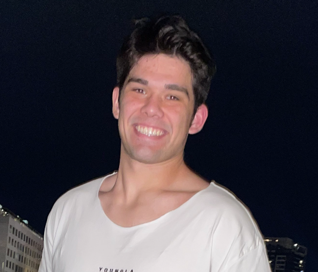
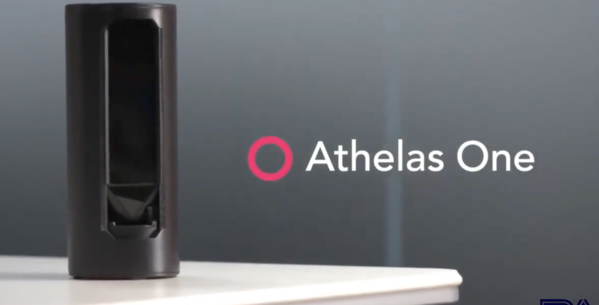

Micheal Munson
Welcome to my online abode! I'm a Cali-born health enthusiast. I love fitness, food, and learning about any tools we have at our disposal to modulate how healthy we feel. These are often times based in nutrition, bio- / health-tech, psychology, and so forth. Please feel free to click through my blogs on nutrition or biotech.
I currently work as a product ops manager at Athelas, a venture backed startup pushing the boundaries of modern healthcare. Prior to Athelas, I researched the immunological consequences of a variety of medications being re-purposed as COVID treatments as a Fulbright Scholar in England. In college, I worked in 2 research labs where I validated a machine learning model capable of detecting eye cancer in baby photos and investigated potential drug targets for pulmonary arterial hypertension.
Please read about my prior work below!
Point-of-Care Platelet Counting to Better Manage Bleeding-Related Disorders
For patients facing ongoing low platelet levels, we developed a new portable platelet counter offering convenient at-home monitoring, reducing the need for frequent hospital visits and improving overall quality of life. Read more about it in our publication in the journal Blood!